; they recombine radiatively (
; they recombine radiatively ( ), through traps (Shockley–Read–Hall) or by Auger processes, and diffuse a distance
), through traps (Shockley–Read–Hall) or by Auger processes, and diffuse a distance Continuity equation
Conservation:
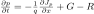
. With the drift–diffusion current and low-level injection in n-type material (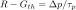
), the equation in the summary follows.Recombination mechanisms
| mechanism | rate | dominant in |
|---|---|---|
| radiative | B(np − n_i²) | direct gap (GaAs): LEDs |
| SRH (traps) | (np − n_i²)/(τ_p(n+n₁)+τ_n(p+p₁)) | indirect gap (Si), defects |
| Auger | (C_n n + C_p p)(np − n_i²) | high density: lasers, emitters |
| surface | S·Δp at the surface | solar cells, small devices |
SRH is fastest for traps near mid-gap (
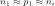
): gold and iron are lifetime killers (Shockley and Read 1952; Hall 1952).Diffusion length (derivation)
Steady state, no field, no generation for
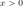
,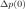
fixed: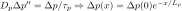
, . Diffusion current at :
. Diffusion current at : 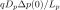
— the building block of the diode equation.Worked example
Si,
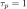
µs,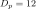
cm²/s: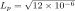
cm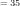
µm. A solar-cell wafer of 180 µm needs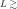
wafer thickness for good collection: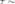
100 µs–1 ms, i.e. very clean silicon. GaAs radiative lifetime at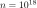
cm :
: 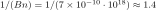
ns.Engineering applications
Photoconductive detectors (gain
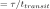
), LED internal quantum efficiency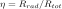
(LEDs), solar-cell collection (solar cells), reverse-recovery time of power diodes (lifetime control by Pt/He implantation), DRAM retention (generation current).Pitfall
 depends on injection level and temperature; a single "lifetime" is only valid in low-level injection.
depends on injection level and temperature; a single "lifetime" is only valid in low-level injection.